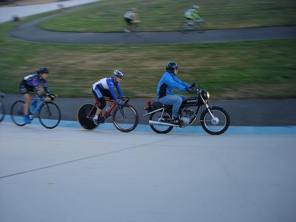
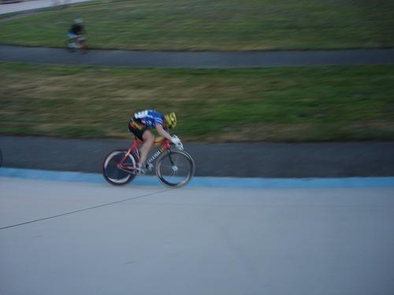
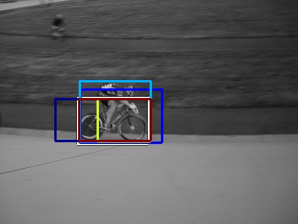
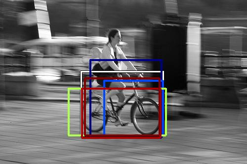
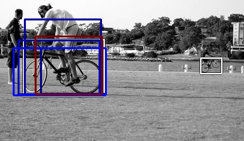
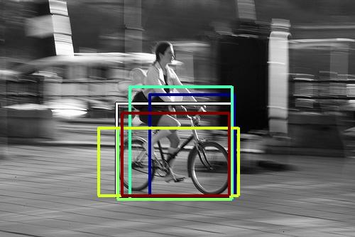
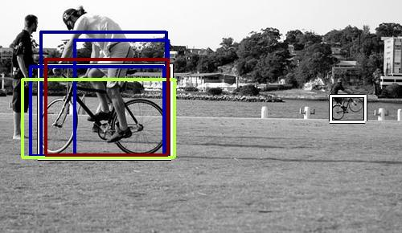
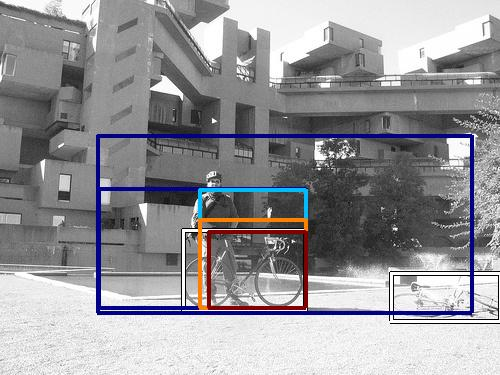

0.397890
0.447936

0.489569

0.515930

0.515942
0.524970

0.539597

0.568620

0.572296

0.576254
| Target image | 0.397890 |  0.447936 | 0.489569 | 0.515930 | 0.515942 |  0.524970 | 0.539597 | 0.568620 | 0.572296 | 0.576254 |
Target image |  10472.402344 |  6617.869141 |  5750.161621 |  5075.670898 |  4557.240723 |  4409.160645 |  3969.707275 |  3723.172607 |  3628.757568 |  3533.188232 |
Target image |  11738.793945 |  11160.654297 |  9872.711914 |  7946.597168 |  6467.173340 |  5127.054199 |  4795.458984 |  4754.490723 |  4704.089844 |  4465.526367 |
| Target image  |  8890.261719 |  8183.856934 |  5653.739746 |  5375.002930 |  5365.377930 |  5305.342773 |  4835.128418 |  4776.693359 |  4296.021484 |  3794.944580 |
| Target image  |  11905.739258 |  11262.039062 |  10444.763672 |  6587.230469 |  5862.051758 |  5802.211426 |  4985.025391 |  4650.380371 |  4564.237305 |  3885.793457 |